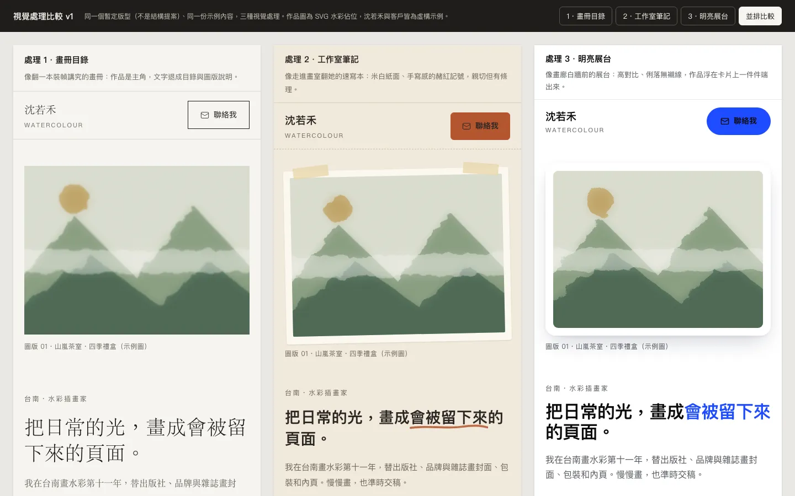
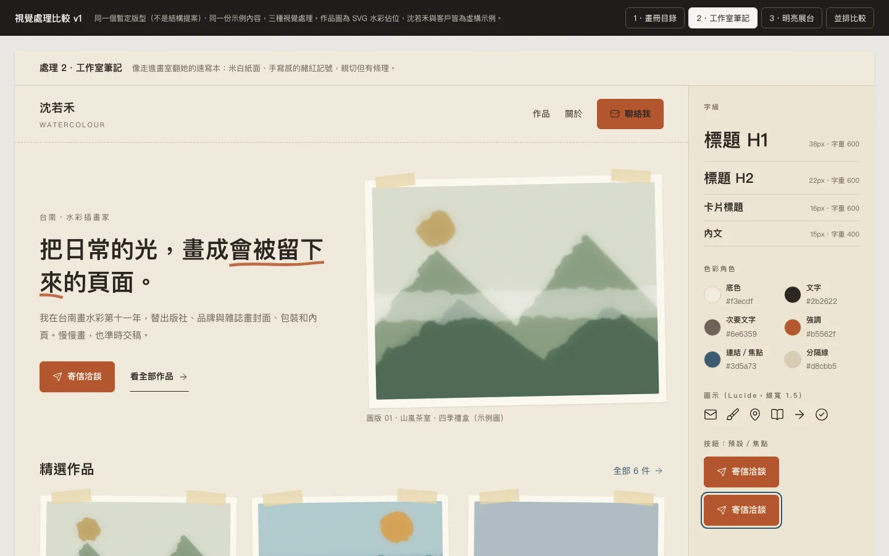
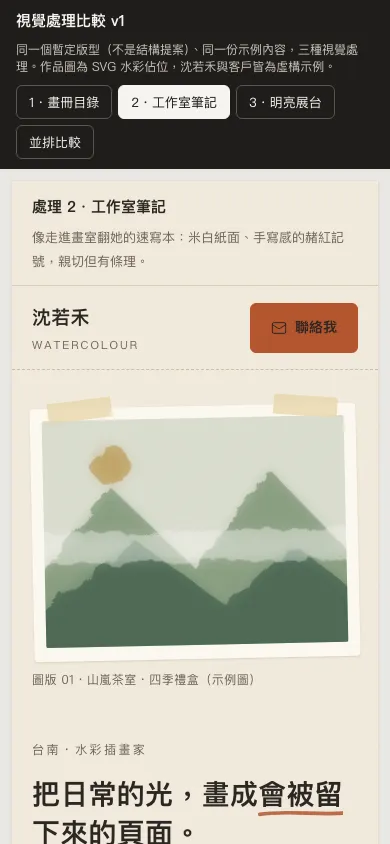
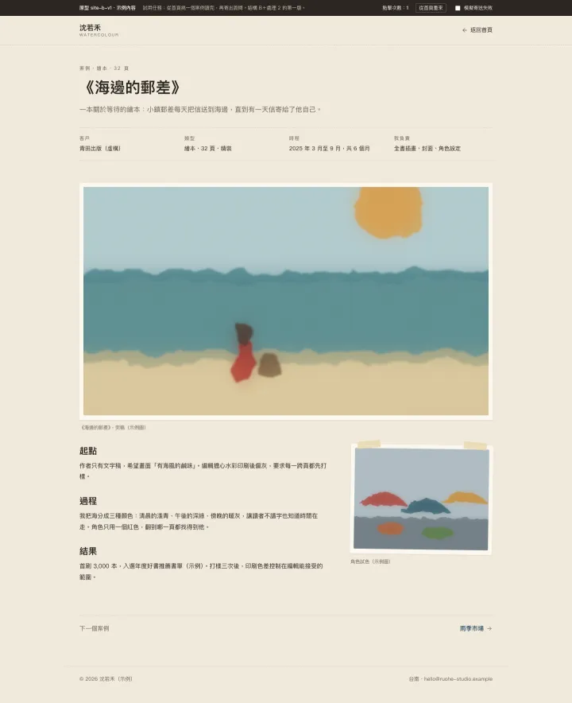
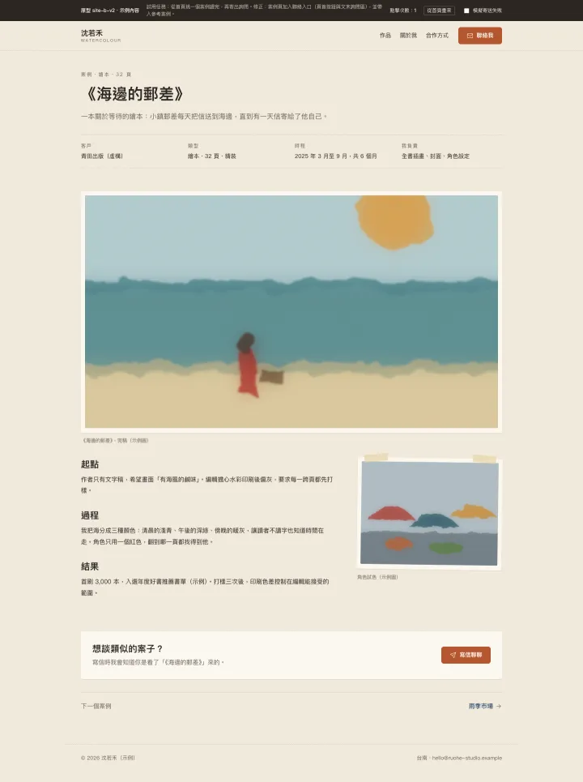
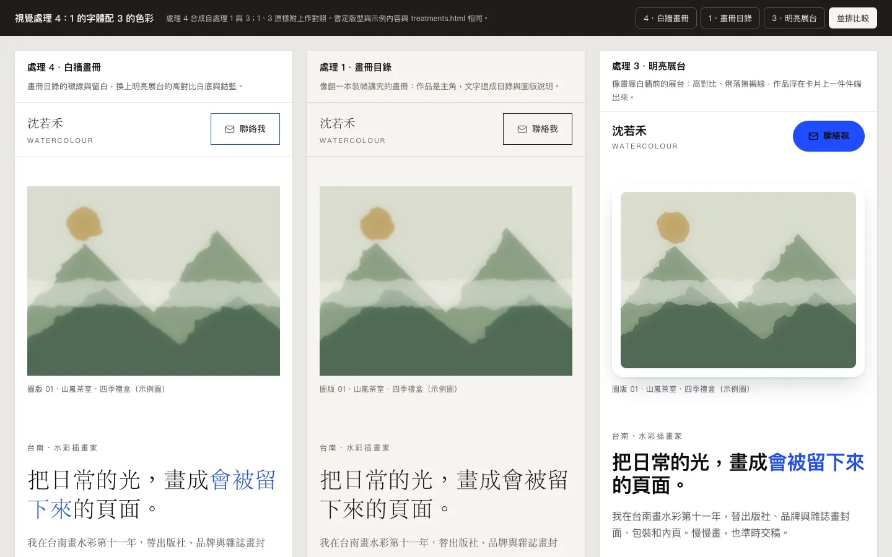
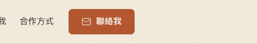
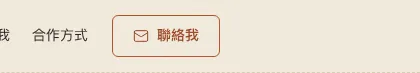

先訪談，不先畫
我想做一個個人官網，還沒有任何介面，請先訪談我想要的風格，再提出方向與原型。
沒有既有介面，也沒有品牌或設計系統，所以是主題起手；從「個人官網」與「作品」推斷產品類型是品牌或個人網站。這一輪只交訪談題，每題有編號、建議答案與理由，使用者可以只回題號。
| 題目 | 技能的建議 | 使用者回答 |
|---|---|---|
| 讀者與主要行動 | 潛在客戶看完作品後寄信洽談。接案網站的轉換通常是一封詢問信。 | 是 |
| 硬性限制 | 只做繁中、淺色；既有素材只有作品圖。 | 是 |
| 以人還是作品為主 | 作品為主，客戶先判斷畫風，再看是誰。 | 改成人和作品並重 |
| 作品圖的性質 | 先假設多為彩色插畫，這會影響底色與留白。 | 大多是水彩 |
第二輪給四組相對的詞：安靜或熱鬧、正式或隨性、精緻或手作、克制或張揚，每一端附一個範例網站，沒有實際打開的標成「憑記憶」。技能整理出三個形容詞「安靜、手作感、可信」，以及要避開的「花俏」。
對。
到這裡訪談完成。參考網站是選填，使用者沒提就不追問。
先比視覺
主題起手先做視覺處理。三張 style tile 用同一個暫定版型、同一批作品與文案，各附一句概念，截圖審看過、確認概念讀得出來才交出。
| 處理 | 概念 | 決定了什麼 |
|---|---|---|
| 1 畫冊目錄 | 作品是主角，文字退成目錄與圖版說明 | 宋體細字、寬鬆留白、描邊直角按鈕 |
| 2 工作室筆記 | 米白紙面、手寫感的赭紅記號 | 黑體、紙紋、紙膠帶與微傾斜的作品、實心赭紅按鈕 |
| 3 明亮展台 | 高對比、作品浮在卡片上 | 純白底、鈷藍強調、圓角卡片、膠囊按鈕 |
選 2。





再比結構
三個結構方向都套處理 2，用同一批作品與文案，差在入口與資訊層級，不只是換色。A 作品牆先行，人幾乎不見，和「人和作品並重」衝突；B 先認識人，再讀三個案子；C 精選案例加上首頁直接詢問，語氣偏業務。技能建議 B。
B。


原型只回答一個問題
這輪要驗證的問題寫在最前面：訪客能不能在三次點擊內看完一個案例並寄出詢問？沒有前端專案，所以交一個離線 HTML，頂端有試用任務、點擊計數與「模擬寄送失敗」開關。
v1 走最短路徑要 4 次點擊，沒有通過。試用後技能分開問兩題：喜歡哪裡，做主要動作時卡在哪裡。使用者說喜歡紙感，卡在案例頁找不到聯絡入口。v2 只修這一點：案例頁恢復導覽與「聯絡我」，文末加上「想談類似的案子？」，並把案例名帶進表單。路徑降到 3 次。
定稿。






一句話也能推進
定稿之後，使用者的短回覆都放在當下的階段解讀，不重開訪談。下表前兩句是這個案例實際跑過的，後兩句是技能規則對其他短回覆的示範。
| 使用者回覆 | 技能怎麼做 | 不做什麼 |
|---|---|---|
| 1 的字體配 3 的色彩 | 記下各取哪部分，合成新的處理 4，截圖確認概念仍一致；沒提到的面向跟著提供字體的一方，並明說這是假設。 | 不重開訪談或結構比較 |
| 聯絡按鈕太搶眼 | 只改這顆按鈕，存新版本 v3，附改前改後截圖，在微調紀錄記一行。 | 不順手改其他地方，看到的問題只列為下一輪提案 |
| 太普通 | 視為視覺回饋：保留結構 B，提出概念更鮮明的處理並截圖比較。 | 不改結構 |
| 下一步？ | 從原始目標、目前階段與未決事項說明下一步。 | 不當成開始實作的授權 |




v3 · 頁首「聯絡我」按鈕 · 實心強調色改為描邊、字重 600→500 · before: shots/contact-v2.png / after: shots/contact-v3.pngSESSION 微調紀錄的原文。v3 是否取代 v2，使用者還沒有表示。
驗證到哪裡
用 Playwright 1.64.1（Chromium headless，macOS）開啟原型、截圖後逐張檢視。下面摘自 SESSION 的驗證段落。
做過的檢查
- 三張 style tile 在字級、間距、表面上明顯不同，不只換色；處理 4 讀得出單一概念。
- 最短路徑：v1 是 4 次點擊，未通過；v2 是 3 次，到達送出完成頁，通過。
- 表單：空白送出、失敗模擬、成功送出、參考案例帶入，在 1440 與 390 寬都正確。
- 390 與 1440 寬沒有水平溢出；按鈕、連結、欄位有可見焦點框；行動版選單的 aria-expanded 會更新；沒有 JavaScript 錯誤。
沒有做的檢查
- 真人試用。腳本中的回饋是示範，不是使用者測試證據。
- 螢幕閱讀器實測；只檢查了 ARIA 屬性存在。
- Safari、Firefox、Windows 字型退回後的版面；390 與 1440 以外的寬度。
- 色彩對比只算了兩組：處理 2 的白字赭紅按鈕 4.66:1，接近下限。真實作品圖未提供。
打開原型
單檔離線 HTML，原樣複製自試跑產物。表單只在頁面內驗證，送出是模擬，不會寄出或儲存。